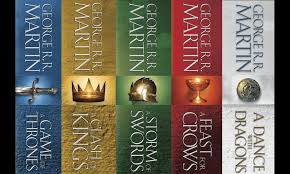
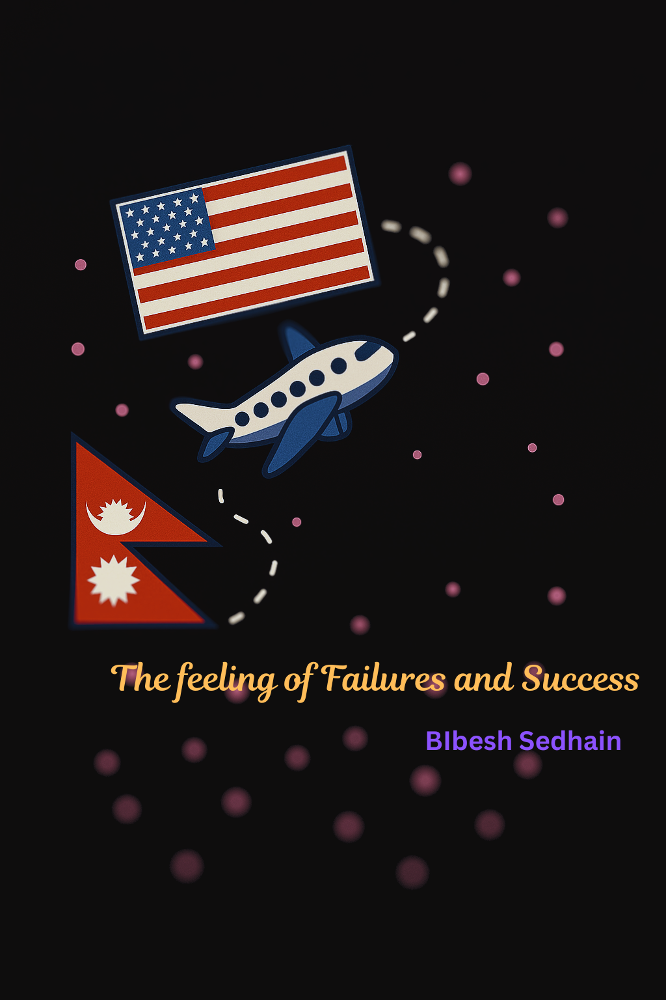

Becoming Bibesh
A Journey of Resilience and Self-Discovery
My Growth Through Words
Essay 1: My Late and Transformative Reading Journey
I never liked reading growing up. In fact, I almost despised it. In school, reading was always reduced to comprehension tests, vocabulary memorization, and tedious summaries. It felt like a chore—cold, lifeless, and disconnected from me.
But something shifted when I picked up *A Game of Thrones* by George R.R. Martin, not for a school assignment, but for the sake up improving my poor English comprehension, reading and writing skills. I didn’t expect much, but I was curious why people were so obsessed with the series. The first few pages were hard. The sentences were dense, the world foreign. But then… something clicked. I got hooked on the politics, the flawed characters, and the grim reality they faced. For the first time, I found myself immersed in a world that didn’t feel forced. I kept reading. Then writing. Then imagining my own stories.
That book opened the floodgates. I started reading voraciously: fantasy, essays, classics, even literary criticism. Words became something I craved—not just to understand SAT passages, but to build worlds, convey emotions, and understand people. I started small by writing fan fiction, and now I’m drafting my original fantasy novel. It’s messy, chaotic, and imperfect—but it’s mine.
When I reflect upon how transformative this journey has been for my academic career as well as for my personal growth, it feels strange to remember that I had no interest in reading until my goal pushed me to start doing it. If I hadn't embraced that challenge back then, I would have missed out on so many great opportunities that I was able to grab and those that are still available to me. This really goes to show how allowing and embracing new life experiences, regardless of how late, can create opportunities for personal growth and success.
Essay 2: The Feeling of Failures and Success
This piece dives deep into my emotional and mental challenges during the college application process. It was easily the darkest and most uncertain period of my life. Rejections from colleges and scholarship disappointments hit harder than I expected—not because they closed doors, but because they made me question my self-worth.
One of the hardest things I had to do was tell people I didn’t get in. That I wasn’t chosen. That I had worked so hard, and it didn’t matter. But I realized: it did matter. Not in the way I thought, but in the way I grew. The experience was brutal, no doubt about it, but it taught me struggle, persseverance and and appriciation of the good things that happened in my life.
Eventually, I found my place at Howard University. It wasn’t the school I initially dreamed of, but it became the school I was meant to be at. I connected with people, found mentors, and discovered a deeper version of myself. I learned how to fail without being a failure.
Writing about this pain helped me process it. It gave me closure, and more importantly, clarity. Success isn’t just about getting in. It’s about getting through. It’s not something I win. It’s something I build—every day, with effort, heart, and a whole lot of hope.
Final Reflection
Most importantly, I’ve learned that our journeys often don’t go as planned, but that doesn’t mean they aren’t meaningful. They shape us in unexpected, beautiful ways. These essays tell the story of how I became someone who doesn’t just dream, but also acts—and someone who doesn’t run from failure, but grows from it. When I started reading books, I didn't know I'd end up writing my own stories and I obviously didn't see myself at a great school like Howard. If I had given in to despair and hopelessness, I would't have been part of these beautiful things. My life lesson is: You don't always know where your hardwork will take you, but struggling despite failures and perssevering will always be worth it
Writing these two very personal pieces of writing has had a profound impact on me. I come from a culture which prioritises community at the cost of individuality. We are not taught to speak, think and write for ourselves. At the beginning of this school year, I was therefore hesitant to be writing so much about my journies and experences. But as a complete my freshman year, I feel much more confident to do it
Final Words: Life will always throw challenges our way — some that we see coming and others that catch us completely off guard. But within every challenge lies a lesson, and within every setback lies the potential for breakthrough. My story is far from over, but if there's one thing I know now, it’s that I will continue to grow, reflect, and keep moving forward — with purpose, with passion, and with hope.
Author Bio
Bibesh Sedhain is a freshman Computer Science major at Howard University. Originally from Kathmandu, Nepal, his story is one of resilience, identity, and growth. He aspires to pursue a career in AI/ML and continues to write in his free time.
Favorite Quote: “Failure is not the opposite of success, it’s part of success.” — Arianna Huffington